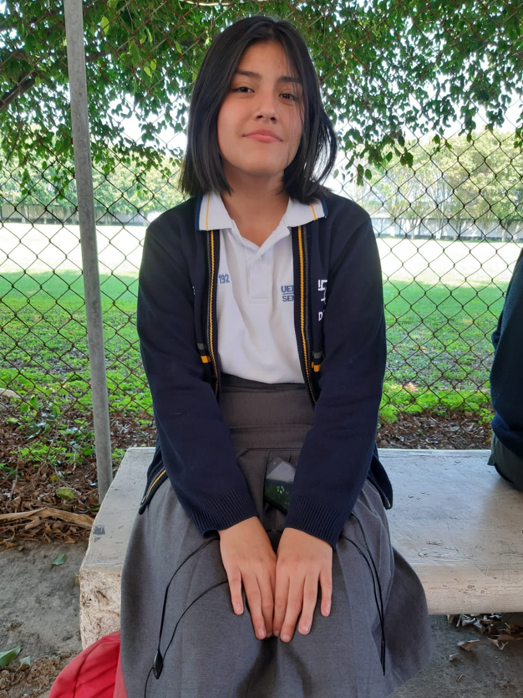

Ruth Vazquez Ruiz
Perfil
Mi nombre es Ruth y soy estudiante de la Universidad Veracruzana, Estoy en la carrera de Tecnologias de la Informacion en las Organizaciones. Soy una persona trabajadora, aunque me cueste entenderle muy bien, al final siempre trado de dar lo mejor de mi. Mi objetivo es poder concluir mis estudios en esta institucion
Datos Generales
Edad: 17 años
Matricula: S22022240
Municipio: Orizaba
Celular: 272 141 9094
Correo electrónico: ruth_vazquez4@hotmail.com
Institución: Universidad Veracruzana
Pasatiempos
Dibujar
Escuchar música
Jugar Videojuegos
Crear manualidades
Leer
Formación Academica
Primaria: Antonio I Villarreal
Secundaria: Margarita Maza P. De Juarez
Preparatoria: CBTis No.192
Idiomas
Español
Inglés
Parcial 1 "Tarea 2"
Programa 1:
Mostrar mensaje de bienvenida
Programa 2:
Java declare dos numeros enteros y los muestre en pantalla
Programa 3:
Java declare un número real, obtenga y muestre por pantalla el doble y el triple de ese número
Programa 4:
Java declare una cantidad de grados centigrados y la pase a grados fahrenheit
Programa 5:
Java declare el radio de un circulo, y calcule y muestre la longitud y el área de la circunferencia
Programa 6:
Java pase una velocidad en Km/h a m/s. La velocidad se declara como real
<<<<<<< HEAD
Programa 7:
Java calcule el volumen de una esfera
=======
Programa 7:
Java calcule el volumen de una esfera >>>>>>> a1a0af6b02b575ae55228e556a3e007904049427
Parcial 1 "Tarea 3"
Programa 1:
Hello World
Programa 2:
Variables
Programa 3:
Flag
Programa 4:
Range
Programa 5:
Operators
Programa 6:
InputInteger
Programa 7:
InputFloatString
Programa 8:
Beatles
Programa 9:
IfStatement
Programa 10:
IfElse
Programa 11:
IfElsef
Programa 12:
SwitchNumber
Programa 13:
ForJava
Programa 14:
ForNumbers
Programa 15:
ForSum
Programa 16:
Factorial
Parcial 1 "Tarea 4"
Programa 1:
Fibonacci
Programa 2:
Factorial
Programa 3:
Cubica
Programa 4:
Promedio
Programa 5:
Calculopi
Programa 6:
Cuadrado
Programa 7:
Triangulo